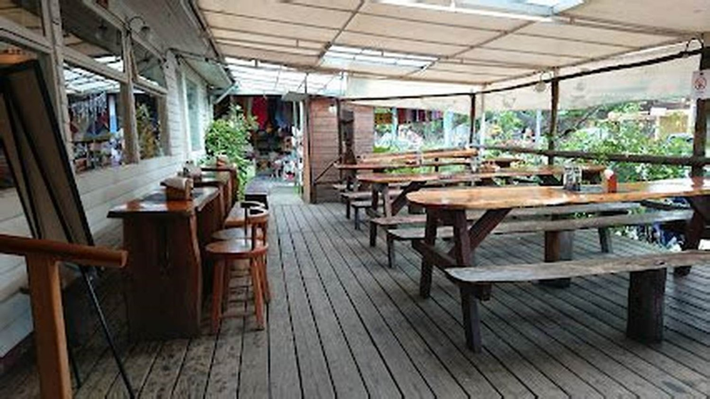

Cocina casera · Villarrica
¿Qué hay
hoy de menú?
La pregunta que en esta casa contestan veinte veces al día por teléfono. Acá va escrita, y se cambia todas las mañanas en un minuto.
- reseñas en Google
- 516
Se cambia cada mañana
El menú de hoy
Lunes 30 de agosto
- Cazuela de vacunofalta
- Pollo arvejado con arrozfalta
- Charquicán con huevofalta
- Merluza frita con ensaladafalta
El menú incluye falta: confirmar si trae entrada, postre o bebida. Se sirve hasta las falta: hora o hasta que se acabe, que es lo que suele pasar.
Todos los días
La carta de siempre
Lo que hay aunque el menú del día se haya acabado.
Para partir
- Empanada de pinofalta
- Sopaipillasfalta
- Ensalada chilenafalta
De fondo
- Lomo a lo pobrefalta
- Pollo asado con papasfalta
- Costillarfalta
- Pescado del díafalta
Para terminar
- Leche asadafalta
- Mote con huesillofalta
Los precios van como «falta» a propósito: publicar uno equivocado molesta más que no publicarlo. Se completan en una conversación de cinco minutos.

La foto que decide en la vereda
La terraza larga, con las mesas de madera
En Villarrica en enero, quien busca dónde almorzar decide caminando y en diez segundos. Esta terraza cubierta, con las mesas puestas y la sombra, contesta las tres preguntas de esos diez segundos: si está abierto, si hay lugar y si es para uno. Es de ellos, está en su ficha, y no aparece en ninguna otra parte.
Quién cocina
La casera
Quinientas dieciséis personas se tomaron el trabajo de escribir una reseña. Eso no pasa por la decoración: pasa porque alguien cocina como en la casa y atiende como si uno fuera conocido.
Esa historia existe y no está escrita en ninguna parte. Es la parte de la página que ninguna cadena puede copiar.
- Quién está a cargo
- falta: nombre
- Desde cuándo
- falta: año
- Dirección
- falta
- Horario
- falta
Reservar mesa para hoy
Diga cuántos son y a qué hora: el mensaje se arma solo.